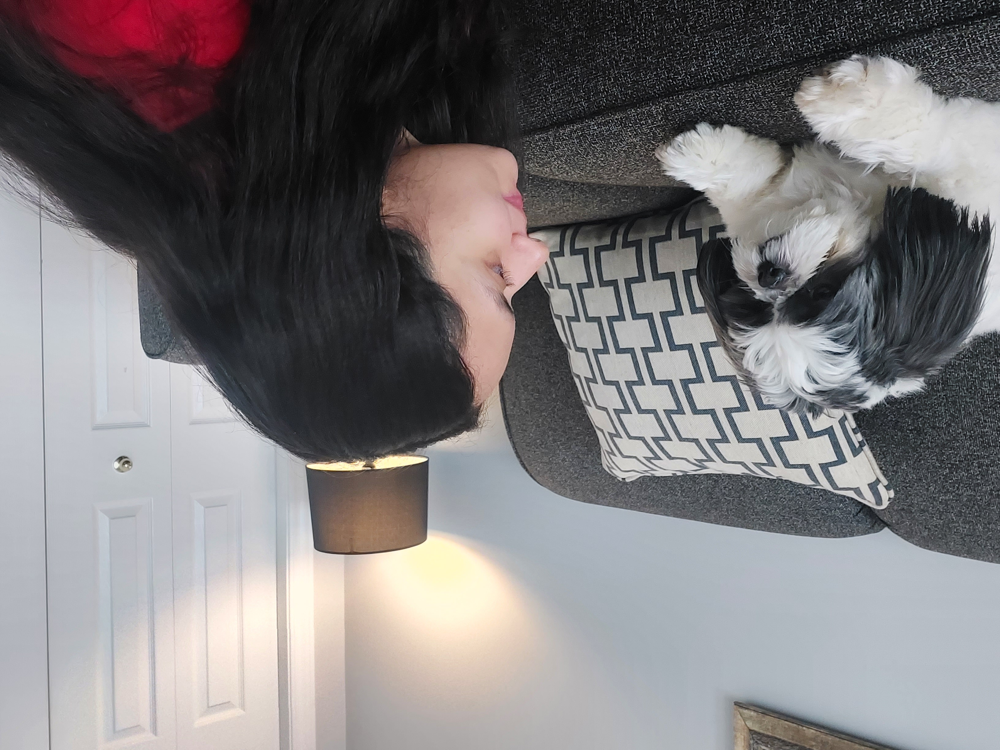
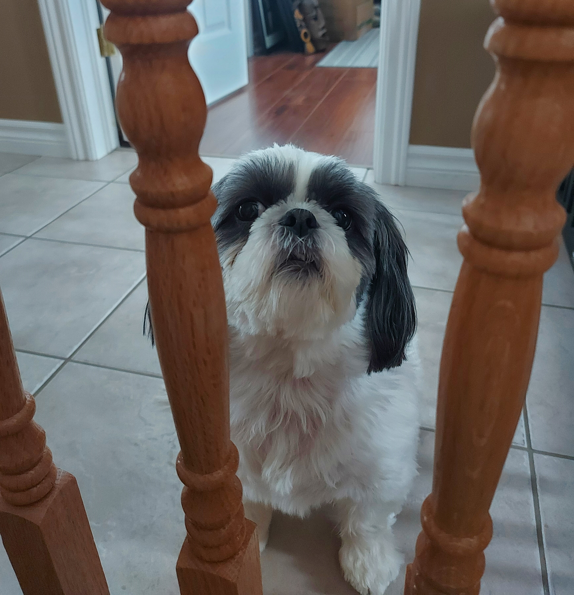

Besides being so many breeds, dogs are my favorite pets. I do not own one unfortunately, but I've the chance to live with a beautiful Shi Tzu this past month. Her name is Nyssa and she is definitely the sweetest being ever.
She loves playing around, eating lots of carrots, and being petted being petted for the vast majority of the time! I love it when she jumps around, and runs in the house just excited about anything! She is just always joyful, and yes, very spoiled. Her long ears remind me of piggy tails in a little girl, and that just makes her a million times cuter!
She also loves playing in the snow. Her owner has told me that if I wanted to make a snowball and pretend to throw it, Nyssa would go after it. That is very funny! I haven't tried doing that yet, but I might anytime soon. Here's a video of her in the snow:
As I mentioned before, she loves to be petted. Sometimes she goes wherever I go, and when I finally seat down, she jumps on me so I can pet her. Is so funny, but also so sweet. When I'm in my classes, she comes and just stays beside me until I give her the attention she wants. When she's had enough, she leaves and comes back every now and then. (Probably every hour haha) I have video of her that describes this situation:
And finally I will show some of my favorite videos about her!
Anyways, she is the nearest experience I've had with having a pet. She is very nice, so hopefully my next experiences with pets are as great as this one.